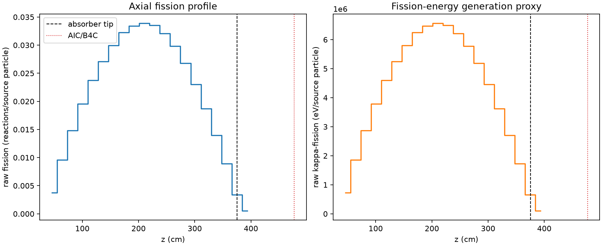
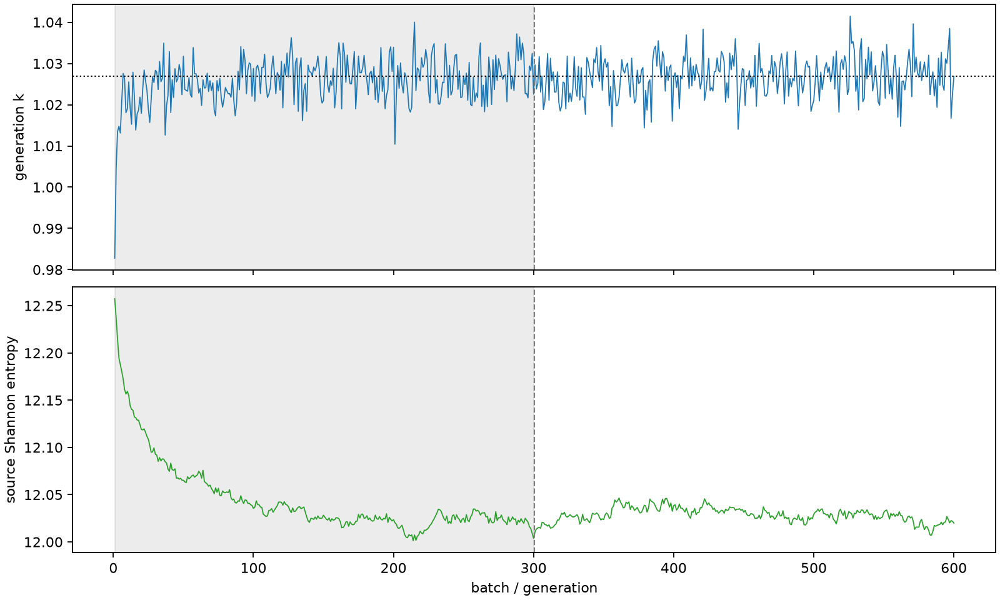

| field | value |
|---|---|
| experiment | V2-STAGE_128_OGRENCI_04-0012 |
| k | 1.0268932697894222 |
| MC standard error | 0.0001775555448428919 |
| seconds | 996.8473917259998 |
| acceptance | not_assessed |
| convergence | review_required |
Completed is output integrity only; physical and statistical review required. Zero tallies do not prove zero production or zero uncertainty.
| diagnostic | value |
|---|---|
| geometric fuel voxels | 5280 |
| zero fission tally voxels | 0 |
| low signal fuel voxels | 0 |
| low signal fission share | 0.0 |
| low signal kappa share | 0.0 |
| important fission share | 0.9500236296929874 |
| previous filter included | 5280 |
| duration estimate s | 1562.5173488400023 |
| actual minus estimate s | -565.6699571140025 |
| fission relative MC error | statistics |
|---|---|
| all_geometric_fuel | {"voxels": 5280, "positive_mean_voxels": 5280, "zero_mean_voxels": 0, "undefined_relative_error_voxels": 0, "median": 0.009854028357515476, "p95": 0.030897193251894252, "maximum": 0.07789164344807493} |
| low_signal | {"voxels": 0, "positive_mean_voxels": 0, "zero_mean_voxels": 0, "undefined_relative_error_voxels": 0, "median": null, "p95": null, "maximum": null} |
| important_95pct | {"voxels": 4101, "positive_mean_voxels": 4101, "zero_mean_voxels": 0, "undefined_relative_error_voxels": 0, "median": 0.009128951760857387, "p95": 0.013463208955430229, "maximum": 0.016982384009527264} |
| outside_previous_filter | {"voxels": 0, "positive_mean_voxels": 0, "zero_mean_voxels": 0, "undefined_relative_error_voxels": 0, "median": null, "p95": null, "maximum": null} |
| kappa_fission relative MC error | statistics |
|---|---|
| all_geometric_fuel | {"voxels": 5280, "positive_mean_voxels": 5280, "zero_mean_voxels": 0, "undefined_relative_error_voxels": 0, "median": 0.009841603242442317, "p95": 0.03084898546372732, "maximum": 0.07776380914864327} |
| low_signal | {"voxels": 0, "positive_mean_voxels": 0, "zero_mean_voxels": 0, "undefined_relative_error_voxels": 0, "median": null, "p95": null, "maximum": null} |
| important_95pct | {"voxels": 4101, "positive_mean_voxels": 4101, "zero_mean_voxels": 0, "undefined_relative_error_voxels": 0, "median": 0.009116669490224593, "p95": 0.01344621374841241, "maximum": 0.016960690378863757} |
| outside_previous_filter | {"voxels": 0, "positive_mean_voxels": 0, "zero_mean_voxels": 0, "undefined_relative_error_voxels": 0, "median": null, "p95": null, "maximum": null} |
| axial bin | fission share | kappa-fission share |
|---|---|---|
| 1 | 0.00899209726969736 | 0.008992617412819382 |
| 2 | 0.022853436872947573 | 0.0228534280492552 |
| 3 | 0.035411660985910705 | 0.0354115180243813 |
| 4 | 0.046750183298852575 | 0.0467501150171467 |
| 5 | 0.05664754187502237 | 0.05664740580877927 |
| 6 | 0.0647311289315017 | 0.06473116229458704 |
| 7 | 0.07152395890956707 | 0.07152386958332745 |
| 8 | 0.07702947837307095 | 0.07702919601215517 |
| 9 | 0.07976355623243302 | 0.07976328793889642 |
| 10 | 0.08089662107522128 | 0.08089635882652986 |
| 11 | 0.08004684592560869 | 0.08004657138953848 |
| 12 | 0.07657925608352728 | 0.07657931220852422 |
| 13 | 0.07126952650949296 | 0.07126927159422455 |
| 14 | 0.06399424051096614 | 0.06399404801494636 |
| 15 | 0.05498858647461892 | 0.05498850565590257 |
| 16 | 0.044625708052643404 | 0.04462561188788487 |
| 17 | 0.03329632608201656 | 0.03329632757286649 |
| 18 | 0.0212592928643956 | 0.021259299216993034 |
| 19 | 0.008056585152142588 | 0.008057472840847296 |
| 20 | 0.0012839685203632173 | 0.0012846206503942222 |
Histories include the inactive-to-active transition at batch 300. kappa-fission approximates fission energy production, not total heat deposition.

